Lasso and friends (Linear High-dimensional Regression)
Tree-based methods (Nonlinear)
Review
Basic ML Setup
Flexible functional forms
Limit expressiveness via regularization
Learn how much to regularize tuning
What do the features imply about properties of \(\hat{f}\) ?
How can we use \(\hat{f}\) in applied data analyses?
The Approximation-Overfit Tradeoff
The Fundamental Challenge
As model complexity increases, we face two competing forces:
Approximation error decreases as we better capture the true underlying function
Estimation error increases as we begin to fit noise in our training data
This creates the bias-variance tradeoff that defines machine learning:
Simple models: High bias, low variance
Complex models: Low bias, high variance
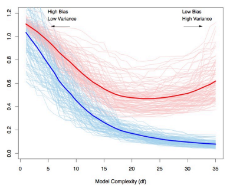
Bias-variance tradeoff visualization. The blue curve represents test error, while the red curve shows training error. The gap widens as model complexity increases, indicating overfitting.
Supervised Learning
For supervised learners, we need three things:
Function Class
A regularizer
Optimization algorithms to guide us
Choosing a regularization parameter using k-fold Cross-validation
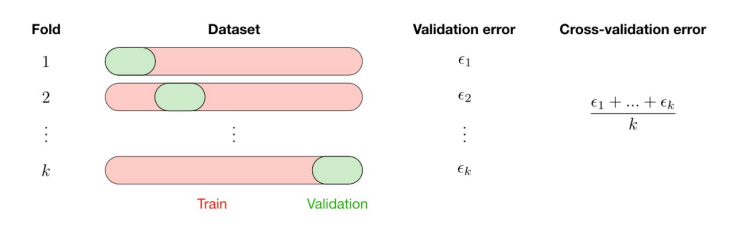
Full ML Exercise
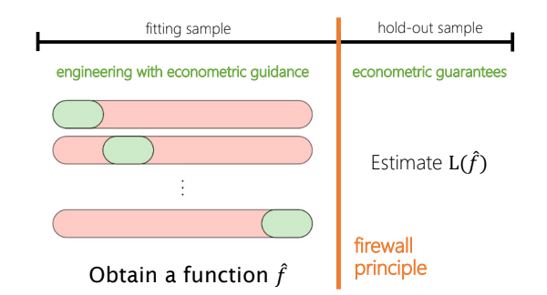
The Regularization Spectrum: How We Control Complexity
Every model class has its own unique form of regularization that controls the bias-variance tradeoff. Understanding this spectrum reveals the fundamental unity behind seemingly diverse machine learning approaches.
Function Class
Regularization Parameters
Linear
LASSO, ridge, elastic net
Decision/regression trees
Depth, leaves, leaf size, info gain
Random forest
Trees, variables per tree, sample sizes, complexity
Nearest neighbors
Number of neighbors
Kernel regression
Bandwidth
Splines
Number of knots, order
Neural nets
Layers, sizes, connectivity, drop-out, early stopping
Cross-cutting insight: While the specific mechanisms differ, regularization always involves restricting a model’s capacity to memorize training data, instead encouraging it to generalize underlying patterns. Tree-based methods share this fundamental principle with linear models, but implement it through structural constraints rather than coefficient penalties.
Lasso Regression: Constrained Minimization to Regularize
Objective: Minimize the sum of squared errors while keeping coefficients small
Constrained Form
\[
\begin{align}
\min_{\beta} &\sum_{i=1}^{n} \left(y_i - \beta_0 - \sum_{j=1}^{p} \beta_j x_{ij}\right)^2\\
\text{subject to } &\sum_{j=1}^{p} |\beta_j| \leq t
\end{align}
\]
\(t \geq 0\) is the constraint parameter
Smaller \(t\) means more regularization
\(t = 0\) forces all \(\beta_j = 0\)
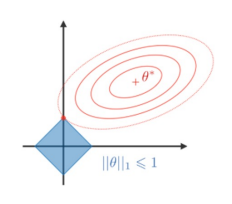
Contours of RSS function and lasso constraint region (diamond). Solution occurs at corners, forcing coefficients to zero.
Highly correlated predictors compete for selection
Different random seeds in cross-validation → different final models
Selection can be unstable with small changes in data
Lasso Selection Instability
Lasso variable selection often exhibits instability across different runs, even on the same dataset:
Small changes in data can lead to completely different sets of selected variables
Highly correlated predictors compete for selection
Cross-validation randomness affects final model composition
Bootstrapping or repeated CV shows selection frequencies
Implications for practice: - Single Lasso runs may miss important variables - Ensemble approaches can provide more stable selection - Variable selection consistency is not guaranteed
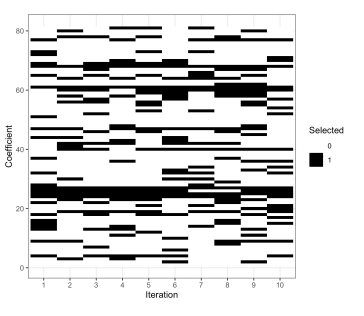
Variable selection across 10 iterations of Lasso on the same dataset. Black indicates selected; white indicates excluded. Notice the inconsistent pattern of selection.
Tree-Based Methods: Overview
Previously: linear models, regularization (ridge, lasso, elastic net)
Now: flexible, non-parametric approaches for prediction and classification
Key Question:
How can we model non-linear relationships without assuming functional form?
Decision trees and (mostly) their extensions…
Tree-based methods include random forests, bagged trees, boosted trees, which combine many decision trees in different ways (called an ensemble)..
Why Tree-Based Methods?
Powerful non-parametric approaches that:
Make no assumptions about functional form
Automatically model interactions between predictors
Handle different types of predictors (continuous, categorical)
Are highly interpretable (single trees)
Can achieve excellent predictive performance (ensembles)
Perfect for health services research, where relationships are often complex and non-linear!
Decision Trees: Intuition
Trees reflect human decision-making processes
We navigate a series of yes/no questions
Arrive at a prediction based on answers to those questions
Trees segment predictor space into regions, then:
For regression: Predict mean outcome value in that region
For classification: Predict most common class in that region
The beauty is in the simplicity: - No formula needed - Can capture complex relationships without parametric assumptions
Example: Surviving the Titanic
Example: Surviving the Titanic
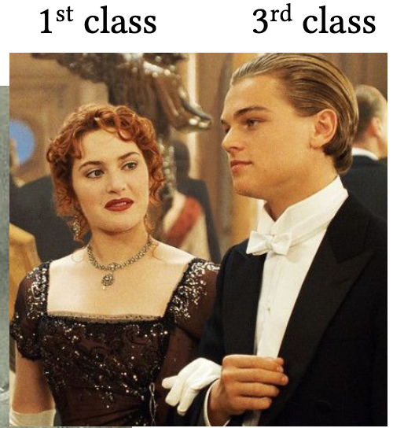
Age, Class and Survival
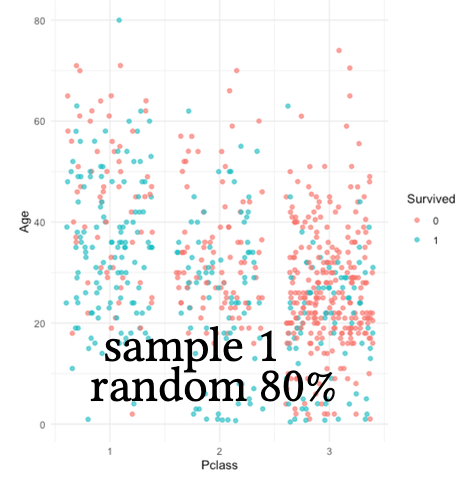
Age, Class and Survival
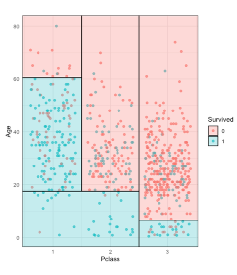
Age, Class and Survival
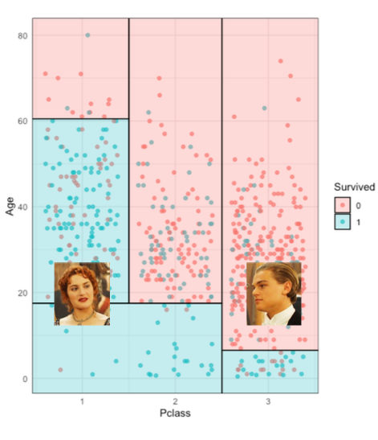
Age, Class and Survival
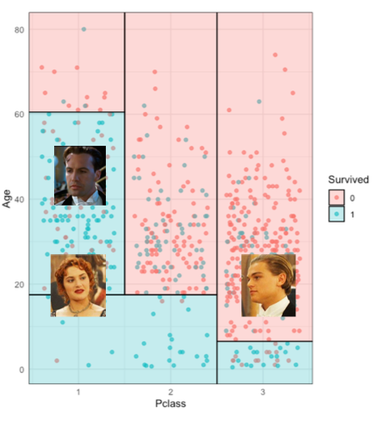
Age, Class and Survival: Tree
flowchart TD
A[Age > 60?] --> |Yes| B[Did not survive]
A --> |No| C[Pclass = 1?]
C --> |Yes| D[Survived]
C --> |No| E[Pclass = 2?]
E --> |Yes| F[Age > 20?]
F --> |Yes| G[Did not survive]
F --> |No| H[Did not survive]
E --> |No| I[Age < 10?]
I --> |Yes| J[Survived]
I --> |No| K[Did not survive]
%% Styling
classDef survived fill:#a8d5e5,stroke:#333,stroke-width:1px;
classDef notSurvived fill:#f8cecc,stroke:#333,stroke-width:1px;
class D,J survived;
class B,G,H,K notSurvived;
How to Grow a Tree?
The general approach:
Split: Choose a predictor and value to split data
Recurse: Apply the same process to resulting regions
Prune: Simplify the tree to prevent overfitting
The key challenge: Finding the optimal splits
Growing a Regression Tree
Goal: Partition predictor space into non-overlapping regions \(R_1, R_2, ..., R_J\) to minimize:
where \(|T|\) is the number of terminal nodes and \(\alpha\) is the complexity parameter
Cross-Validation for Optimal Tree Size
Grow a large tree \(T_0\)
For range of \(\alpha\) values, find best subtree \(T_\alpha\)
Use K-fold cross-validation to select optimal \(\alpha\)
Return the subtree \(T_\alpha\) that corresponds to the optimal \(\alpha\)
Remember: We’re using the same cross-validation framework we learned with lasso!
The Fundamental Problem of Trees
Single trees have: - High interpretability - Limited predictive performance
Can we keep the flexibility of trees while improving predictive performance?
Ensemble Methods to the Rescue!
The core idea: Combine many trees to reduce variance and improve predictions
Key ensemble approaches:
Bagging: Bootstrap aggregation of trees
Random Forests: Bagging with random feature selection
Boosting: Sequential tree building to correct errors
Bagging Trees
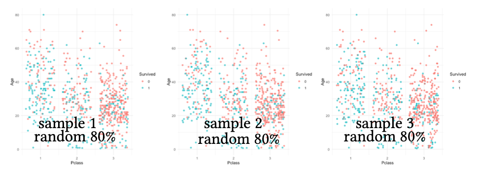
Bagging Trees
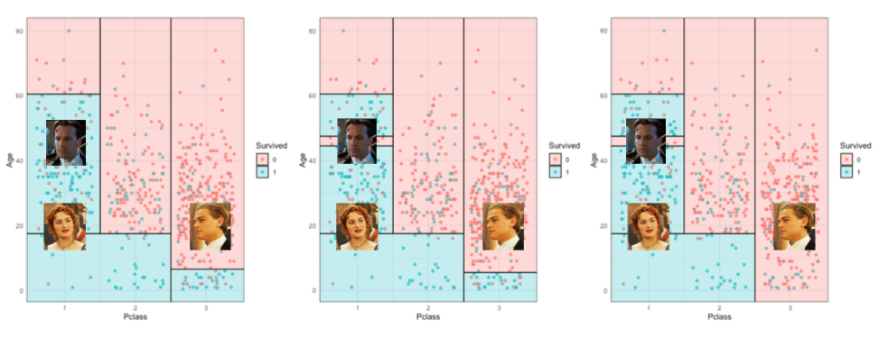
Bagging (Bootstrap Aggregation)
Create \(B\) bootstrap samples from training data
Fit a deep, unpruned tree to each bootstrap sample
Average predictions across all trees (for regression)
Take majority vote (for classification)
Key insight: Averaging many high-variance, low-bias estimators gives a lower-variance, low-bias ensemble
Ensemble Prediction
By averaging over many low bias but high variance models, we reduce the overall variance ⇒ more accurate model.
the average of all \(B\) predictions for regression trees: \(\hat{y}_{bag}(X) = \frac{1}{B} \sum_{i=1}^{B} \hat{y}^i(X)\)
the majority vote by all \(B\) predictions for classification trees: \(\hat{y}_{bag}(X) = \underset{k}{\arg\max} \sum_{i=1}^{B} I\{\hat{y}^i(X) = k\}\)